WTI Technical Analysis & Backtesting#
Using the bt and talib packages on WTI daily OHLC data (1-year window) fetched via yfinance.
1 Trading Basics#
Load WTI daily OHLC data#
WTI crude oil futures (CL=F) are fetched via yfinance for the past 12 months. The dataset contains Open, High, Low, Close prices — the same structure used throughout this notebook.
import pandas as pd
import matplotlib.pyplot as plt
import yfinance as yf
from datetime import datetime, timedelta
END_DATE = datetime.today()
START_DATE = END_DATE - timedelta(days=730)
START_STR = START_DATE.strftime('%Y-%m-%d')
END_STR = END_DATE.strftime('%Y-%m-%d')
# Fetch WTI daily OHLC
wti_raw = yf.Ticker('CL=F').history(start=START_STR, end=END_STR, interval='1d')
wti_data = wti_raw[['Open', 'High', 'Low', 'Close']].copy()
wti_data.index = wti_data.index.tz_localize(None) # strip timezone for bt compatibility
print(wti_data.head())
print(f'\nShape: {wti_data.shape} | {START_STR} → {END_STR}')
Open High Low Close
Date
2024-02-26 76.400002 78.029999 75.839996 77.580002
2024-02-27 77.620003 79.000000 77.169998 78.870003
2024-02-28 78.480003 79.620003 77.779999 78.540001
2024-02-29 78.199997 79.279999 77.940002 78.260002
2024-03-01 78.279999 80.849998 78.050003 79.970001
Shape: (503, 4) | 2024-02-26 → 2026-02-25
Plot daily High / Low prices#
plt.figure(figsize=(16, 8))
# Plot daily High and Low
plt.plot(wti_data['High'], color='green', label='Daily High')
plt.plot(wti_data['Low'], color='red', label='Daily Low')
plt.title('WTI Crude Oil — Daily High & Low Prices')
plt.ylabel('Price ($/bbl)')
plt.legend()
plt.tight_layout()
plt.show()
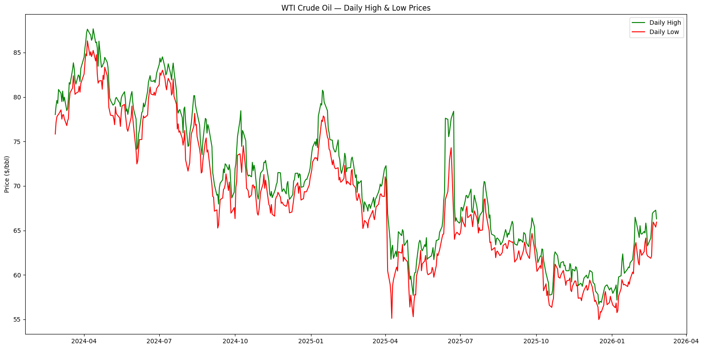
Plot a candlestick chart#
A candlestick chart packs Open, High, Low, and Close into a single visual, giving a richer sense of WTI price action than a simple line chart.
import plotly.graph_objects as go
# Define candlestick data
candlestick = go.Candlestick(
x=wti_data.index,
open=wti_data['Open'],
high=wti_data['High'],
low=wti_data['Low'],
close=wti_data['Close'])
# Create and show figure
fig = go.Figure(data=[candlestick])
fig.update_layout(
title='WTI Crude Oil — Daily Candlestick Chart',
yaxis_title='Price ($/bbl)',
xaxis_rangeslider_visible=False
)
fig.show()
Getting Familiar with the Data#
Resample to weekly#
Switch from daily to weekly granularity by resampling with OHLC aggregation — useful for swing-trading analysis.
# Resample to weekly OHLC
wti_weekly = wti_data.resample('W').agg({
'Open': 'first',
'High': 'max',
'Low': 'min',
'Close': 'last'
})
print(wti_weekly.head())
Open High Low Close
Date
2024-03-03 76.400002 80.849998 75.839996 79.970001
2024-03-10 80.139999 80.669998 77.519997 78.010002
2024-03-17 77.800003 81.620003 76.790001 81.040001
2024-03-24 81.029999 83.849998 80.300003 80.629997
2024-03-31 80.849998 83.209999 80.550003 83.169998
Plot a daily return histogram#
WTI crude oil is known for sharp moves driven by geopolitics and inventory surprises. The return distribution reveals how fat-tailed the price changes are.
# Calculate daily returns
wti_data['daily_return'] = wti_data['Close'].pct_change() * 100
# Plot histogram
wti_data['daily_return'].hist(bins=60, color='darkorange', edgecolor='black')
plt.ylabel('Frequency')
plt.xlabel('Daily Return (%)')
plt.title('WTI Crude Oil — Daily Return Distribution')
plt.tight_layout()
plt.show()
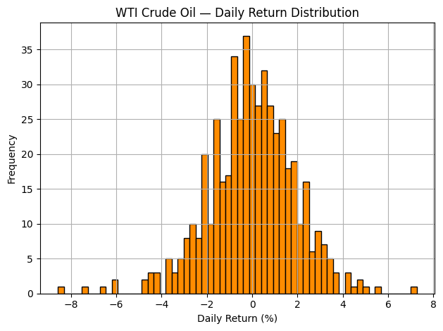
Calculate and plot SMAs#
A 20-day and 50-day SMA are applied to the WTI close price to smooth out day-to-day noise and highlight the medium-term trend.
# Calculate SMAs
wti_data['SMA_20'] = wti_data['Close'].rolling(window=20).mean()
wti_data['SMA_50'] = wti_data['Close'].rolling(window=50).mean()
plt.figure(figsize=(16, 6))
plt.plot(wti_data['Close'], color='darkorange', linewidth=1.2, label='Close')
plt.plot(wti_data['SMA_20'], color='blue', linewidth=1.4, label='SMA_20')
plt.plot(wti_data['SMA_50'], color='green', linewidth=1.4, label='SMA_50')
plt.title('WTI Crude Oil — Simple Moving Averages')
plt.ylabel('Price ($/bbl)')
plt.legend()
plt.tight_layout()
plt.show()
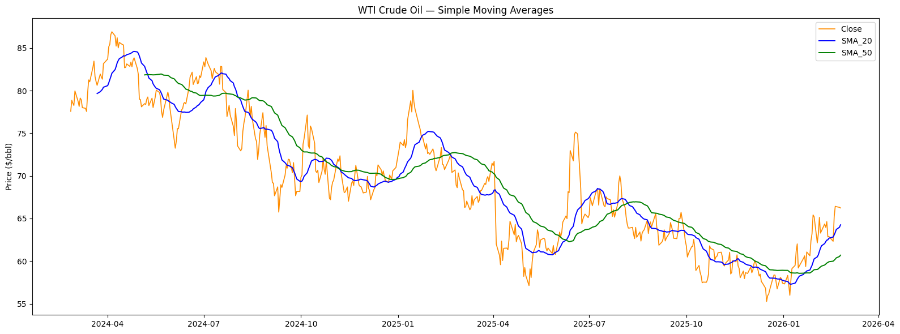
Financial Trading with bt#
The bt process#
The bt package provides a flexible framework for defining and backtesting trading strategies.
Get historical price data via
yfinance, then wrap in abt-compatible DataFrame.Define the strategy with
bt.Strategy()and the requiredalgos.Create a backtest with
bt.Backtest(), run it, then plot and evaluate the result.
# bt expects a DataFrame of Close prices with lowercase column names
bt_data = wti_data[['Close']].rename(columns={'Close': 'wti'})
print(bt_data.head())
wti
Date
2024-02-26 77.580002
2024-02-27 78.870003
2024-02-28 78.540001
2024-02-29 78.260002
2024-03-01 79.970001
import bt as bt
# Define a weekly-rebalanced equal-weight strategy (single asset = fully invested)
bt_strategy = bt.Strategy('WTI_Weekly',
[bt.algos.RunWeekly(),
bt.algos.SelectAll(),
bt.algos.WeighEqually(),
bt.algos.Rebalance()])
# Create and run the backtest
bt_test = bt.Backtest(bt_strategy, bt_data)
bt_res = bt.run(bt_test)
100%|██████████| 1/1 [00:02<00:00, 2.27s/it]
# Plot the backtest result
bt_res.plot(title='WTI — Weekly Rebalanced Backtest')
plt.show()
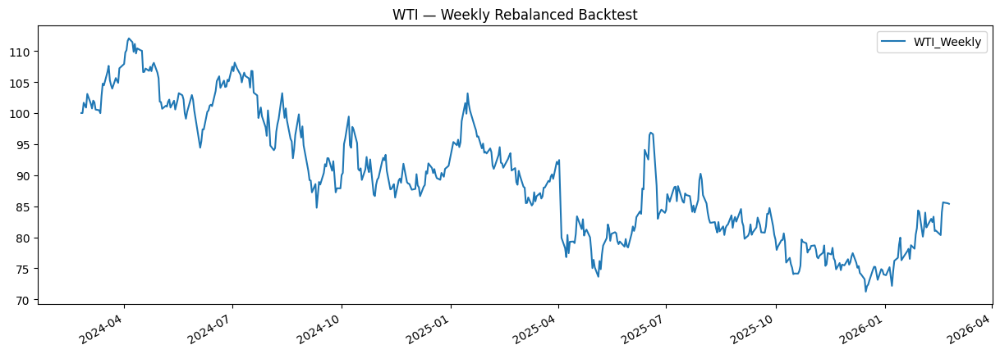
# Get trade details
bt_res.get_transactions()
| price | quantity | ||
|---|---|---|---|
| Date | Security | ||
| 2024-02-26 | wti | 77.580002 | 12889.0 |
| 2024-09-03 | wti | 70.339996 | 1.0 |
2 Technical Indicators#
Trend Indicators: MAs#
import talib
import matplotlib.pyplot as plt
import pandas as pd
# Use the WTI data already loaded (last 365 days)
stock_data = wti_data.copy()
Calculate and plot two EMAs#
A 12-period and 26-period EMA are the core components of MACD. Applied here to WTI Close prices — the shorter EMA reacts faster to recent crude oil price swings.
# Calculate EMAs
stock_data['EMA_12'] = talib.EMA(stock_data['Close'], timeperiod=12)
stock_data['EMA_26'] = talib.EMA(stock_data['Close'], timeperiod=26)
plt.figure(figsize=(16, 6))
plt.plot(stock_data['EMA_12'], label='EMA_12', linewidth=1.4)
plt.plot(stock_data['EMA_26'], label='EMA_26', linewidth=1.4)
plt.plot(stock_data['Close'], label='Close', color='darkorange', linewidth=1.0, alpha=0.7)
plt.legend()
plt.title('WTI Crude Oil — EMA 12 vs EMA 26')
plt.ylabel('Price ($/bbl)')
plt.tight_layout()
plt.show()
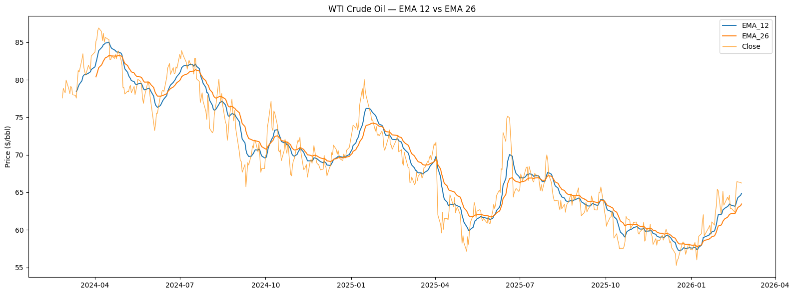
SMA vs. EMA#
SMA weights all periods equally; EMA applies more weight to recent data. For volatile commodities like WTI, the EMA typically tracks price turns faster.
# Calculate 50-period SMA and EMA
stock_data['SMA'] = talib.SMA(stock_data['Close'], timeperiod=50)
stock_data['EMA'] = talib.EMA(stock_data['Close'], timeperiod=50)
plt.figure(figsize=(16, 6))
plt.plot(stock_data['SMA'], label='SMA_50', linewidth=1.5)
plt.plot(stock_data['EMA'], label='EMA_50', linewidth=1.5)
plt.plot(stock_data['Close'], label='Close', color='darkorange', linewidth=1.0, alpha=0.7)
plt.legend()
plt.title('WTI Crude Oil — SMA vs EMA (50-period)')
plt.ylabel('Price ($/bbl)')
plt.tight_layout()
plt.show()
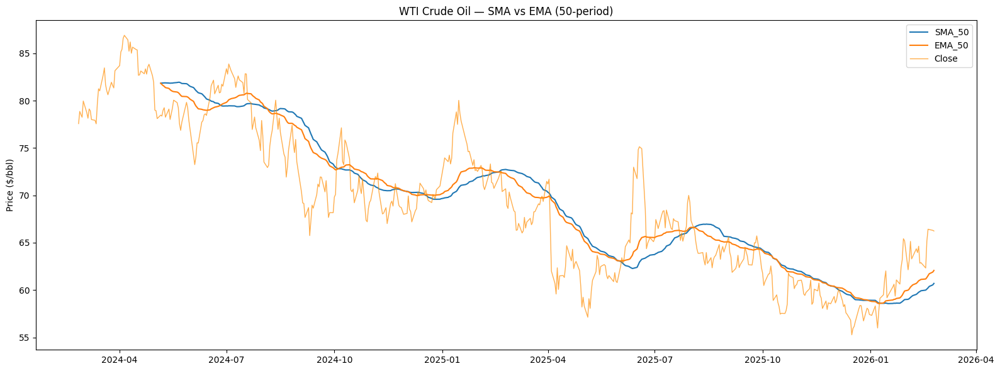
Strength Indicators: ADX#
Calculate the ADX#
The Average Directional Index (ADX) measures trend strength — not direction. An ADX above 25 signals a strong trend, which is particularly useful for WTI given its tendency to trend on supply/demand shocks.
# Calculate ADX with default (14) and longer (21) periods
stock_data['ADX_14'] = talib.ADX(stock_data['High'],
stock_data['Low'],
stock_data['Close'])
stock_data['ADX_21'] = talib.ADX(stock_data['High'],
stock_data['Low'],
stock_data['Close'], timeperiod=21)
print(stock_data[['High', 'Low', 'Close', 'ADX_14', 'ADX_21']].tail())
High Low Close ADX_14 ADX_21
Date
2026-02-18 65.559998 62.119999 65.190002 29.420071 22.702501
2026-02-19 66.900002 64.879997 66.430000 30.067359 23.200924
2026-02-20 67.050003 65.940002 66.389999 30.728359 23.706009
2026-02-23 67.279999 65.379997 66.309998 30.824699 23.957080
2026-02-24 66.300003 65.940002 66.239998 30.914157 24.196195
Visualize the ADX#
Plot WTI Close price alongside ADX to identify periods where a directional crude oil trend was strong enough to trade.
stock_data['ADX'] = talib.ADX(stock_data['High'], stock_data['Low'], stock_data['Close'])
fig, (ax1, ax2) = plt.subplots(2, figsize=(15, 9), sharex=True)
ax1.set_ylabel('Price ($/bbl)')
ax1.plot(stock_data['Close'], color='darkorange', label='Close')
ax1.set_title('WTI Crude Oil — Price and ADX')
ax1.legend()
ax2.set_ylabel('ADX')
ax2.plot(stock_data['ADX'], color='red', label='ADX_14')
ax2.axhline(25, color='gray', linestyle='--', linewidth=0.8, label='Trend threshold (25)')
ax2.legend()
plt.tight_layout()
plt.show()
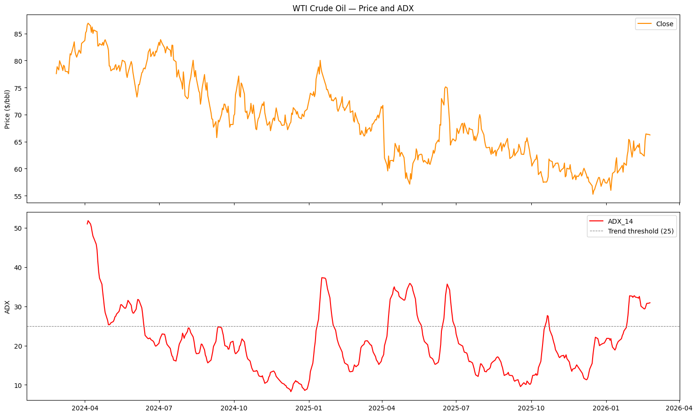
Momentum Indicators: RSI#
Calculate the RSI#
RSI oscillates between 0–100. Above 70 = overbought; below 30 = oversold. For WTI, RSI extremes often coincide with inventory surprise reactions.
# Calculate RSI with default (14) and longer (21) periods
stock_data['RSI_14'] = talib.RSI(stock_data['Close'])
stock_data['RSI_21'] = talib.RSI(stock_data['Close'], timeperiod=21)
print(stock_data[['Close', 'RSI_14', 'RSI_21']].tail())
Close RSI_14 RSI_21
Date
2026-02-18 65.190002 59.559487 58.246446
2026-02-19 66.430000 62.663851 60.500146
2026-02-20 66.389999 62.497184 60.389737
2026-02-23 66.309998 62.141203 60.159185
2026-02-24 66.239998 61.809459 59.948917
Visualize the RSI#
stock_data['RSI'] = talib.RSI(stock_data['Close'])
fig, (ax1, ax2) = plt.subplots(2, figsize=(15, 9), sharex=True)
ax1.set_ylabel('Price ($/bbl)')
ax1.plot(stock_data['Close'], color='darkorange')
ax1.set_title('WTI Crude Oil — Price and RSI')
ax2.set_ylabel('RSI')
ax2.plot(stock_data['RSI'], color='orangered')
ax2.axhline(70, color='red', linestyle='--', linewidth=0.8, label='Overbought (70)')
ax2.axhline(30, color='green',linestyle='--', linewidth=0.8, label='Oversold (30)')
ax2.set_ylim(0, 100)
ax2.legend()
plt.tight_layout()
plt.show()
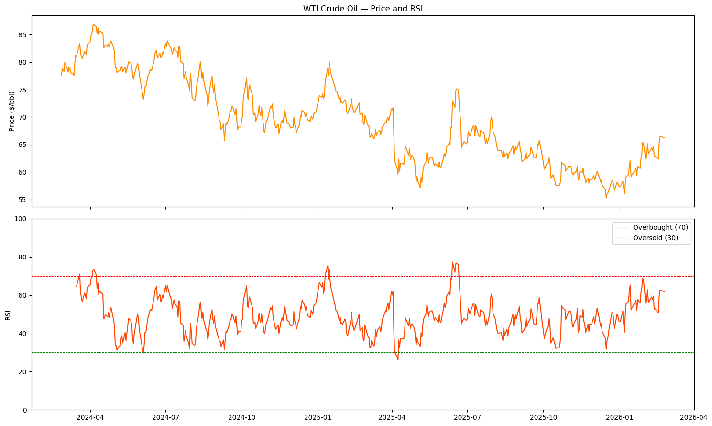
Volatility Indicators: Bollinger Bands#
Implement Bollinger Bands#
Bollinger Bands envelope the price within ±2 standard deviations of a 20-period SMA. WTI frequently touches the bands during geopolitical shocks or EIA inventory surprises.
# Calculate Bollinger Bands
upper, mid, lower = talib.BBANDS(stock_data['Close'],
nbdevup=2,
nbdevdn=2,
timeperiod=20)
plt.figure(figsize=(16, 6))
plt.plot(stock_data['Close'], label='WTI Close', color='darkorange', linewidth=1.3)
plt.plot(upper, label='Upper Band', color='red', linewidth=1.0)
plt.plot(mid, label='Middle Band', color='green', linewidth=1.0)
plt.plot(lower, label='Lower Band', color='red', linewidth=1.0)
plt.fill_between(stock_data.index, upper, lower, alpha=0.07, color='blue')
plt.title('WTI Crude Oil — Bollinger Bands (20, ±2σ)')
plt.ylabel('Price ($/bbl)')
plt.legend()
plt.tight_layout()
plt.show()
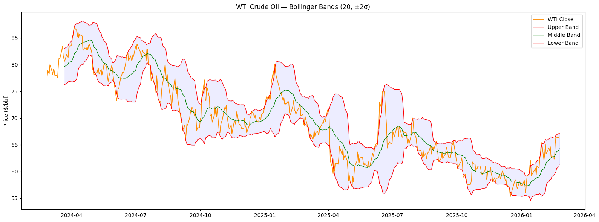
3. Trading Strategies#
Trading Signals#
Build an SMA-based signal strategy#
Buy WTI when the close price is above its 20-day SMA; exit otherwise. This captures upward momentum while avoiding prolonged downtrends.
import bt
import talib
import matplotlib.pyplot as plt
import pandas as pd
# Prepare bt-compatible price data (single column, lowercase name)
price_data = wti_data[['Close']].rename(columns={'Close': 'wti'})
# Calculate the 20-day SMA
sma = price_data.rolling(20).mean()
# Define the SMA signal strategy
bt_strategy = bt.Strategy('WTI_AboveSMA',
[bt.algos.SelectWhere(price_data > sma),
bt.algos.WeighEqually(),
bt.algos.Rebalance()])
# Create and run backtest
bt_backtest = bt.Backtest(bt_strategy, price_data)
bt_result = bt.run(bt_backtest)
# Plot the result
bt_result.plot(title='WTI — Above SMA Backtest Result')
plt.tight_layout()
plt.show()
100%|██████████| 1/1 [00:02<00:00, 2.12s/it]
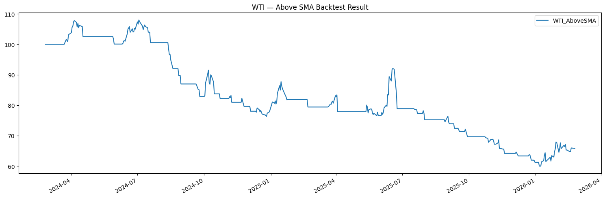
Build an EMA-based signal strategy#
Replace the SMA with a 20-day EMA. Because EMA responds faster to recent WTI price moves, entry/exit signals are generated slightly earlier.
# Calculate the 20-day EMA and align to bt DataFrame format
ema = talib.EMA(price_data['wti'], timeperiod=20)
ema = pd.DataFrame(ema)
ema.rename(columns={0: 'wti'}, inplace=True)
# Define the EMA signal strategy
bt_strategy = bt.Strategy('WTI_AboveEMA',
[bt.algos.SelectWhere(price_data > ema),
bt.algos.WeighEqually(),
bt.algos.Rebalance()])
# Create and run backtest
bt_backtest = bt.Backtest(bt_strategy, price_data)
bt_result = bt.run(bt_backtest)
# Plot the result
bt_result.plot(title='WTI — Above EMA Backtest Result')
plt.tight_layout()
plt.show()
100%|██████████| 1/1 [00:02<00:00, 2.51s/it]
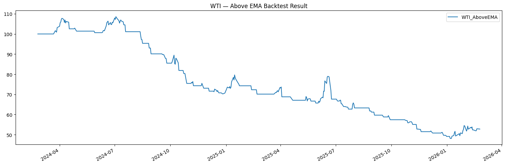
Trend-following Strategies#
# Use the WTI price data already loaded
sma = price_data.rolling(20).mean()
# Calculate short (10-day) and long (40-day) EMAs
EMA_short = talib.EMA(price_data['wti'], timeperiod=10).to_frame()
EMA_long = talib.EMA(price_data['wti'], timeperiod=40).to_frame()
# Initialise signal DataFrame (0 where EMA_long is NaN)
signal = EMA_long.copy()
signal[EMA_long.isnull()] = 0
Construct an EMA crossover signal#
When EMA_10 crosses above EMA_40, enter long WTI. When it crosses below, enter short. The crossover captures sustained directional momentum in crude oil.
# Construct the EMA crossover signal
signal[EMA_short > EMA_long] = 1
signal[EMA_short < EMA_long] = -1
# Visualise signal alongside price and EMAs
combined_df = bt.merge(signal, price_data, EMA_short, EMA_long)
combined_df.columns = ['signal', 'WTI_Price', 'EMA_short', 'EMA_long']
combined_df.plot(secondary_y=['signal'], figsize=(14, 6),
title='WTI — EMA Crossover Signal')
plt.tight_layout()
plt.show()
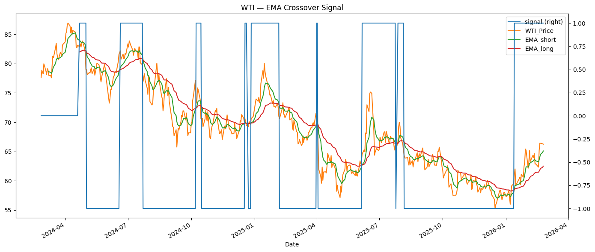
Build and backtest the EMA crossover trend-following strategy#
signal.rename(columns={0: 'wti'}, inplace=True)
# Define and run the trend-following strategy
bt_strategy = bt.Strategy('WTI_EMA_Crossover',
[bt.algos.WeighTarget(signal),
bt.algos.Rebalance()])
bt_backtest = bt.Backtest(bt_strategy, price_data)
bt_result = bt.run(bt_backtest)
# Plot the result
bt_result.plot(title='WTI — EMA Crossover Backtest Result')
plt.tight_layout()
plt.show()
100%|██████████| 1/1 [00:01<00:00, 1.99s/it]
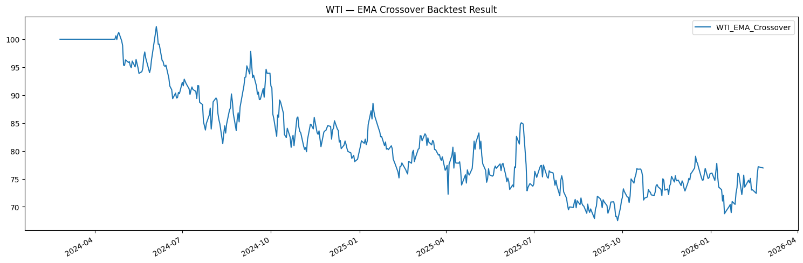
Mean Reversion Strategy#
# Calculate RSI on WTI
stock_rsi = talib.RSI(price_data['wti']).to_frame()
# Initialise signal DataFrame
signal = stock_rsi.copy()
signal[stock_rsi.isnull()] = 0
Construct an RSI-based signal#
WTI often mean-reverts after sharp sentiment-driven moves. When RSI < 30 (oversold), go long; when RSI > 70 (overbought), go short; otherwise flat.
# Construct mean-reversion signal
signal[stock_rsi > 70] = -1
signal[stock_rsi < 30] = 1
signal[(stock_rsi >= 30) & (stock_rsi <= 70)] = 0
# Plot the RSI
stock_rsi.plot(figsize=(14, 4), title='WTI — RSI (14-day)', color='orangered')
plt.axhline(70, color='red', linestyle='--', linewidth=0.8, label='Overbought')
plt.axhline(30, color='green', linestyle='--', linewidth=0.8, label='Oversold')
plt.legend()
plt.tight_layout()
plt.show()
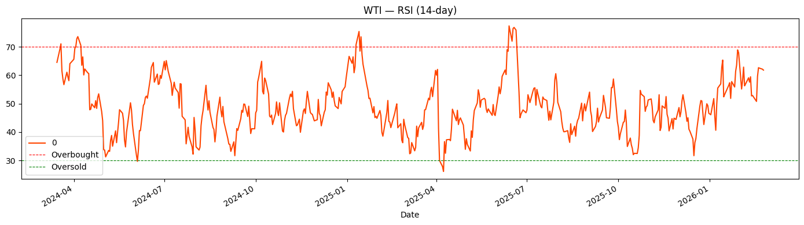
# Merge signal with price for visualisation
combined_df = bt.merge(signal, price_data)
combined_df.columns = ['signal', 'WTI_Price']
combined_df.plot(secondary_y=['signal'], figsize=(14, 6),
title='WTI — RSI Signal vs Price')
plt.tight_layout()
plt.show()
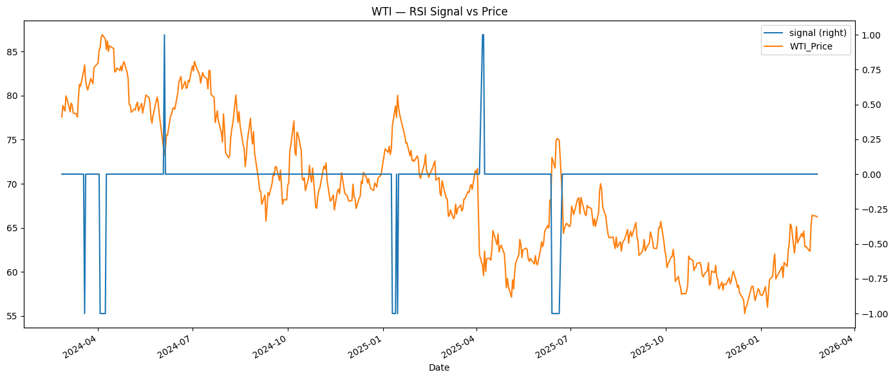
Build and backtest the RSI mean reversion strategy#
signal.rename(columns={0: 'wti'}, inplace=True)
# Define and run the mean reversion strategy
bt_strategy = bt.Strategy('WTI_RSI_MeanReversion',
[bt.algos.WeighTarget(signal),
bt.algos.Rebalance()])
bt_backtest = bt.Backtest(bt_strategy, price_data)
bt_result = bt.run(bt_backtest)
# Plot the result
bt_result.plot(title='WTI — RSI Mean Reversion Backtest Result')
plt.tight_layout()
plt.show()
100%|██████████| 1/1 [00:01<00:00, 1.22s/it]
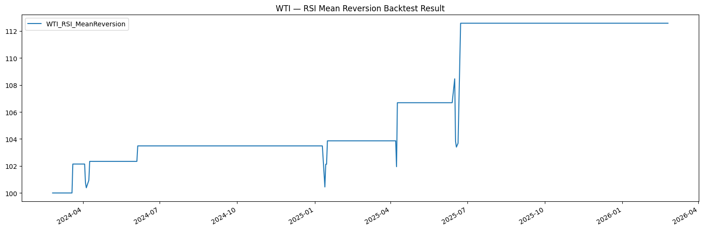
Strategy Optimization and Benchmarking#
Conduct a strategy optimization#
Run the SMA signal strategy across three lookback periods (10, 30, 50 days) to find which window best captures WTI’s directional moves.
def wti_signal_strategy(price_df, period, name):
"""SMA signal strategy for WTI. price_df must have a 'wti' column."""
sma = price_df.rolling(period).mean()
bt_strategy = bt.Strategy(name,
[bt.algos.SelectWhere(price_df > sma),
bt.algos.WeighEqually(),
bt.algos.Rebalance()])
return bt.Backtest(bt_strategy, price_df)
# Create three SMA strategy backtests
sma10 = wti_signal_strategy(price_data, period=10, name='SMA10')
sma30 = wti_signal_strategy(price_data, period=30, name='SMA30')
sma50 = wti_signal_strategy(price_data, period=50, name='SMA50')
# Run all backtests and compare
bt_results = bt.run(sma10, sma30, sma50)
bt_results.plot(title='WTI — SMA Strategy Optimization (10 / 30 / 50)')
plt.tight_layout()
plt.show()
100%|██████████| 3/3 [00:05<00:00, 1.85s/it]
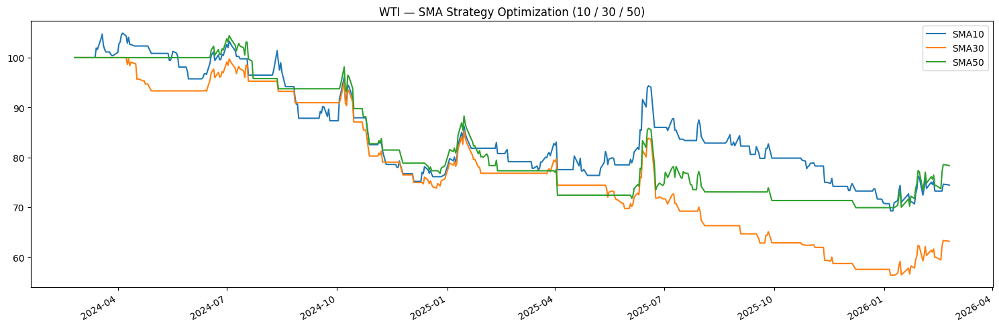
Perform strategy benchmarking#
Compare the active SMA strategies against a passive buy-and-hold of WTI over the same period.
def wti_buy_and_hold(price_df, name):
"""Passive buy-and-hold benchmark for WTI."""
bt_strategy = bt.Strategy(name,
[bt.algos.RunOnce(),
bt.algos.SelectAll(),
bt.algos.WeighEqually(),
bt.algos.Rebalance()])
return bt.Backtest(bt_strategy, price_df)
# Create benchmark and run all together
benchmark = wti_buy_and_hold(price_data, name='BuyAndHold')
bt_results = bt.run(sma10, sma30, sma50, benchmark)
bt_results.plot(title='WTI — SMA Strategies vs Buy-and-Hold Benchmark')
plt.tight_layout()
plt.show()
100%|██████████| 4/4 [00:01<00:00, 3.44it/s]
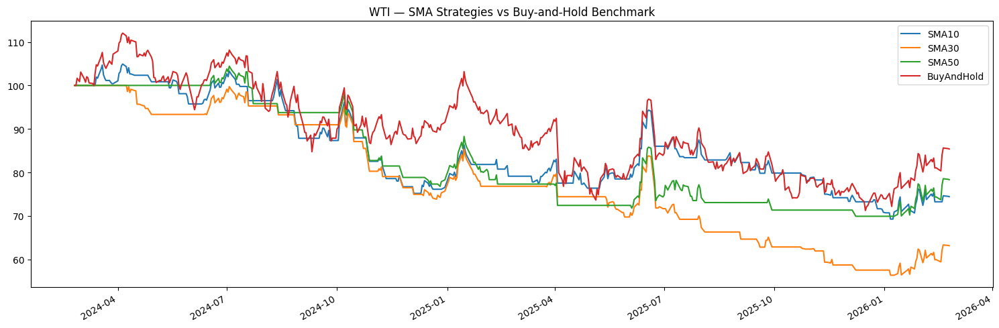
4. Performance Evaluation#
Strategy Return Analysis#
import bt
import talib
import matplotlib.pyplot as plt
import pandas as pd
# Re-run benchmark and SMA strategies for evaluation
benchmark = wti_buy_and_hold(price_data, name='BuyAndHold')
bt_result = bt.run(benchmark)
sma30_bt = wti_signal_strategy(price_data, period=30, name='SMA30')
sma50_bt = wti_signal_strategy(price_data, period=50, name='SMA50')
bt_results = bt.run(sma30_bt, sma50_bt)
100%|██████████| 1/1 [00:01<00:00, 1.93s/it]
100%|██████████| 2/2 [00:03<00:00, 1.87s/it]
Review return results of a backtest#
# Obtain all backtest stats
resInfo = bt_result.stats
# Daily, monthly, yearly mean returns
print('Daily return: %.4f' % resInfo.loc['daily_mean'])
print('Monthly return: %.4f' % resInfo.loc['monthly_mean'])
print('Yearly return: %.4f' % resInfo.loc['yearly_mean'])
Daily return: -0.0323
Monthly return: -0.0573
Yearly return: -0.0229
/tmp/ipykernel_22513/185879230.py:5: FutureWarning:
Calling float on a single element Series is deprecated and will raise a TypeError in the future. Use float(ser.iloc[0]) instead
/tmp/ipykernel_22513/185879230.py:6: FutureWarning:
Calling float on a single element Series is deprecated and will raise a TypeError in the future. Use float(ser.iloc[0]) instead
/tmp/ipykernel_22513/185879230.py:7: FutureWarning:
Calling float on a single element Series is deprecated and will raise a TypeError in the future. Use float(ser.iloc[0]) instead
# Compound Annual Growth Rate
print('CAGR: %.4f' % resInfo.loc['cagr'])
CAGR: -0.0760
/tmp/ipykernel_22513/3145055317.py:2: FutureWarning:
Calling float on a single element Series is deprecated and will raise a TypeError in the future. Use float(ser.iloc[0]) instead
Plot return histograms of the backtest#
# Daily return histogram
bt_result.plot_histograms(bins=50, freq='d')
plt.suptitle('WTI — Daily Return Distribution')
plt.tight_layout()
plt.show()
<Figure size 640x480 with 0 Axes>
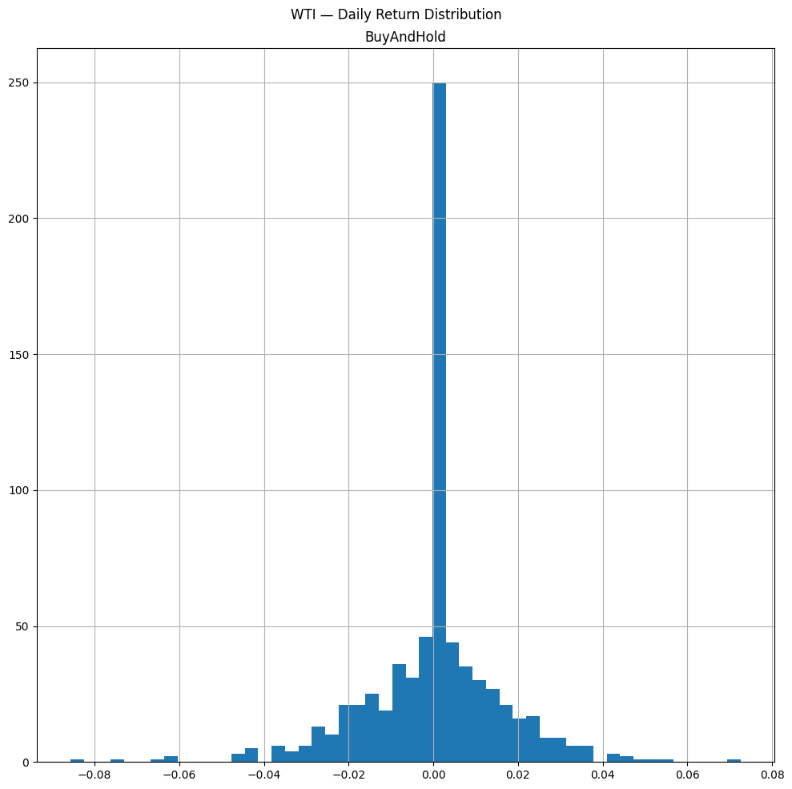
# Weekly return histogram
bt_result.plot_histograms(bins=50, freq='w')
plt.suptitle('WTI — Weekly Return Distribution')
plt.tight_layout()
plt.show()
/home/tom/miniconda3/lib/python3.13/site-packages/ffn/core.py:1073: FutureWarning:
'w' is deprecated and will be removed in a future version, please use 'W' instead.
<Figure size 640x480 with 0 Axes>
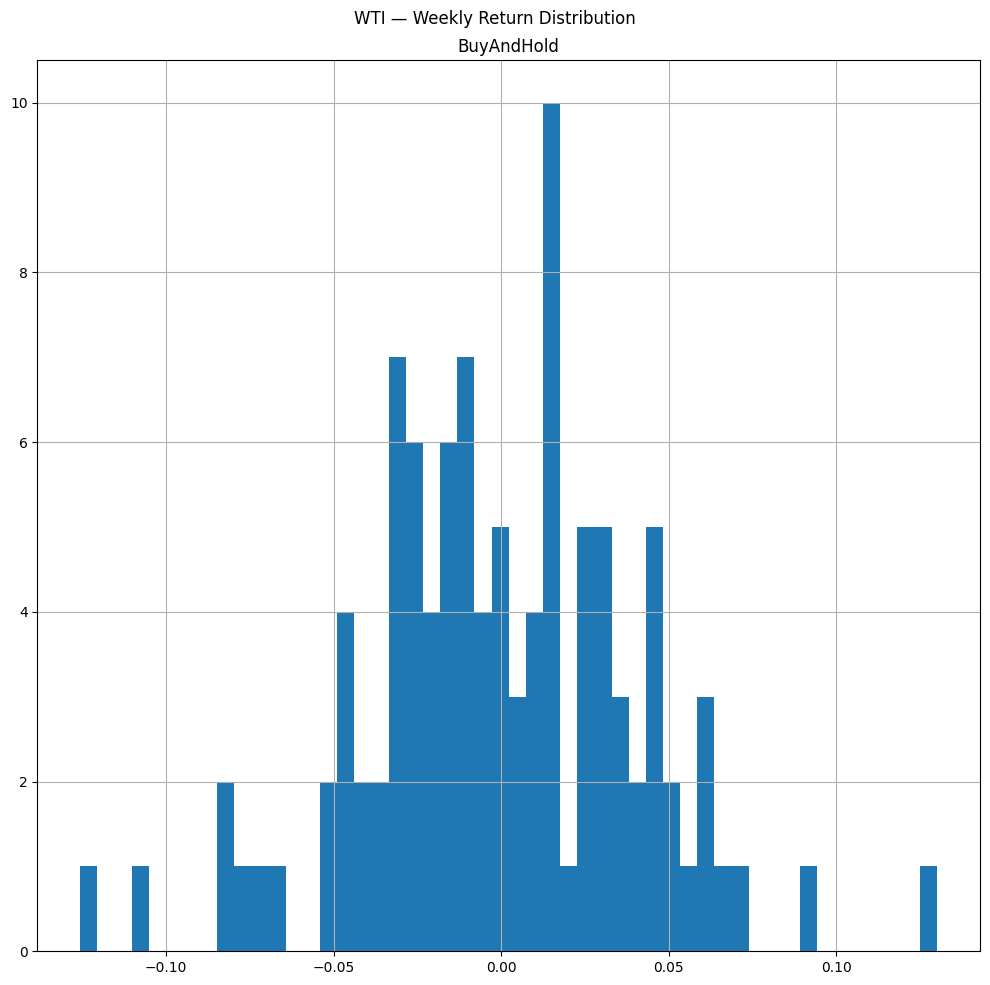
Compare return results of multiple strategies#
# Lookback returns table — SMA30 vs SMA50
lookback_returns = bt_results.display_lookback_returns()
print(lookback_returns)
SMA30 SMA50
mtd 1.58% 1.58%
3m 7.56% 9.81%
6m -4.75% 7.20%
ytd 9.76% 12.04%
1y -17.79% 1.32%
3y -20.55% -11.50%
5y nan% nan%
10y nan% nan%
incep -20.55% -11.50%
Drawdown#
Review performance with drawdowns#
Drawdown measures peak-to-trough loss. WTI can experience sharp, prolonged drawdowns during supply gluts or demand shocks — understanding this is critical for position sizing.
# Stats from the buy-and-hold backtest
resInfo = bt_result.stats
# Average drawdown
avg_drawdown = resInfo.loc['avg_drawdown']
print('Average drawdown: %.2f' % avg_drawdown)
Average drawdown: -0.09
/tmp/ipykernel_22513/2577660819.py:3: FutureWarning:
Calling float on a single element Series is deprecated and will raise a TypeError in the future. Use float(ser.iloc[0]) instead
# Average drawdown duration
avg_drawdown_days = resInfo.loc['avg_drawdown_days']
print('Average drawdown days: %.0f' % avg_drawdown_days)
Average drawdown days: 143
/tmp/ipykernel_22513/4042479730.py:3: FutureWarning:
Calling float on a single element Series is deprecated and will raise a TypeError in the future. Use float(ser.iloc[0]) instead
Calculate and review the Calmar Ratio#
Calmar = CAGR / |Max Drawdown|. A higher Calmar means more return per unit of worst-case loss — essential for commodity strategies where drawdowns can be severe.
# CAGR
cagr = resInfo.loc['cagr']
print('CAGR: %.4f' % cagr)
CAGR: -0.0760
/tmp/ipykernel_22513/3538577384.py:3: FutureWarning:
Calling float on a single element Series is deprecated and will raise a TypeError in the future. Use float(ser.iloc[0]) instead
# Max drawdown
max_drawdown = resInfo.loc['max_drawdown']
print('Maximum drawdown: %.2f' % max_drawdown)
Maximum drawdown: -0.36
/tmp/ipykernel_22513/2566387801.py:3: FutureWarning:
Calling float on a single element Series is deprecated and will raise a TypeError in the future. Use float(ser.iloc[0]) instead
# Calmar ratio (manual)
calmar_calc = cagr / max_drawdown * (-1)
print('Calmar Ratio (calculated): %.2f' % calmar_calc)
Calmar Ratio (calculated): -0.21
/tmp/ipykernel_22513/423130958.py:3: FutureWarning:
Calling float on a single element Series is deprecated and will raise a TypeError in the future. Use float(ser.iloc[0]) instead
# Calmar ratio from bt stats
calmar = resInfo.loc['calmar']
print('Calmar Ratio (bt): %.2f' % calmar)
Calmar Ratio (bt): -0.21
/tmp/ipykernel_22513/2159633317.py:3: FutureWarning:
Calling float on a single element Series is deprecated and will raise a TypeError in the future. Use float(ser.iloc[0]) instead